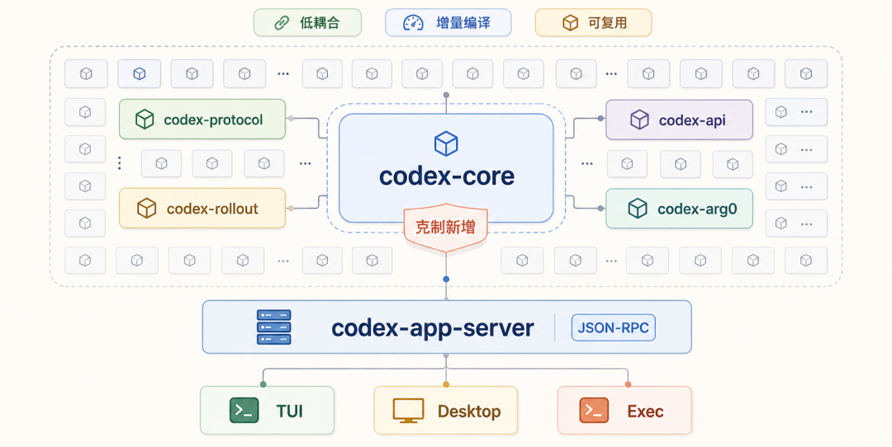
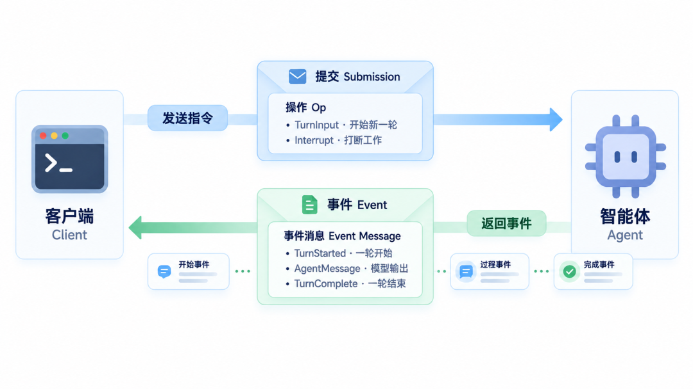
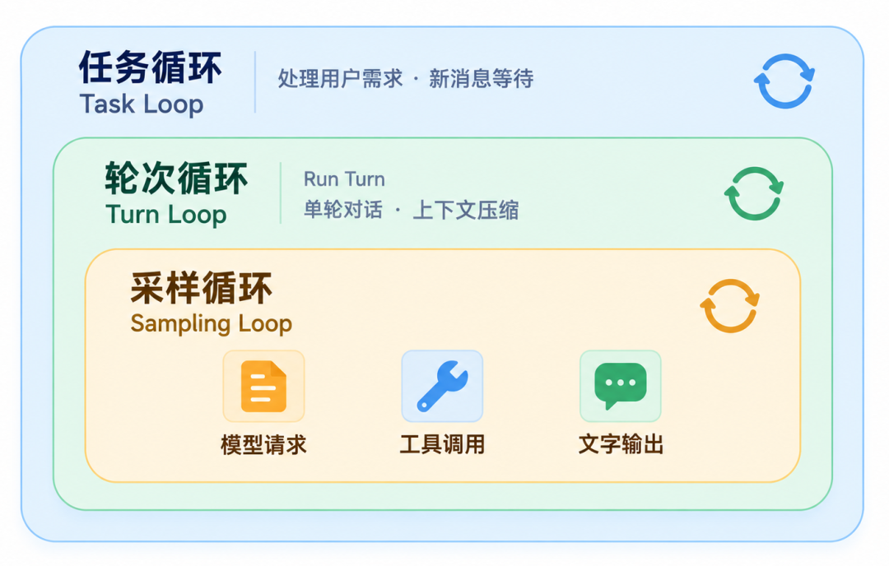
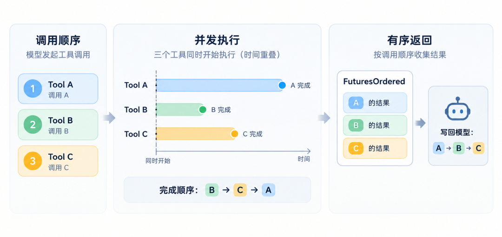
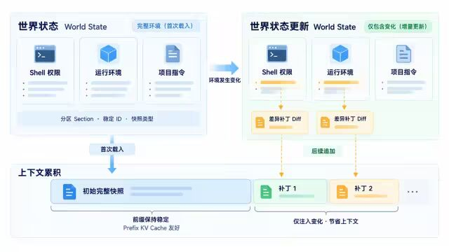
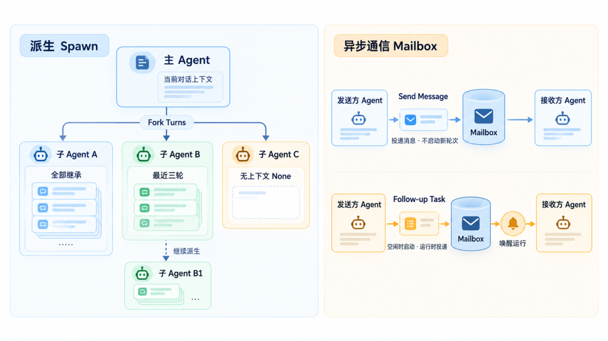
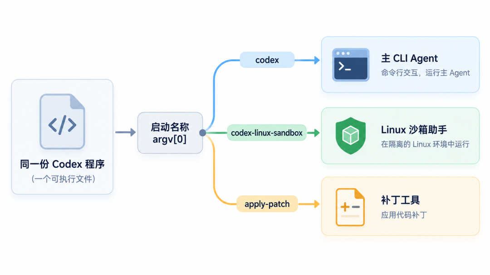
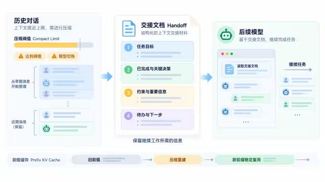
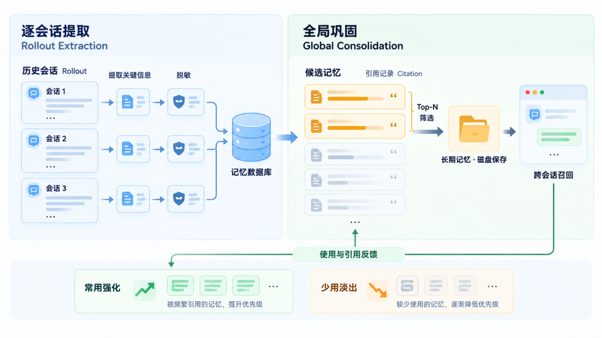
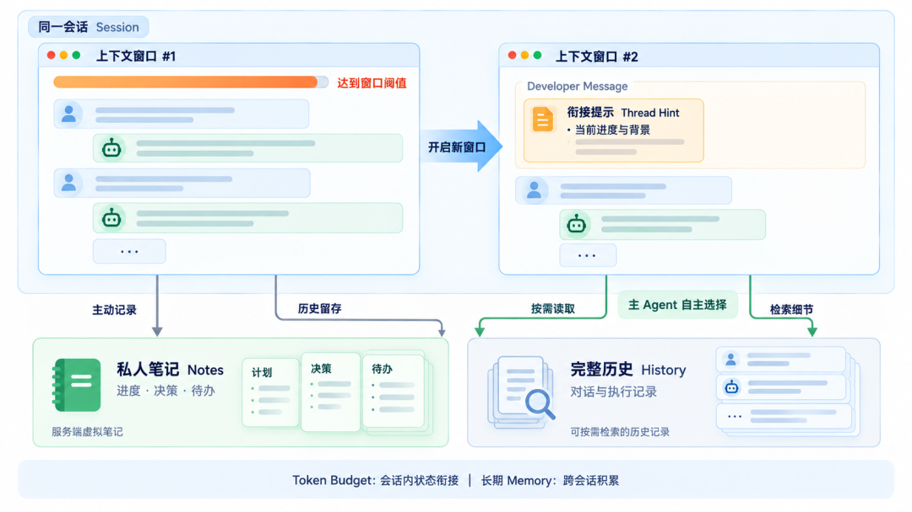

深度解析 Codex Harness 架构及其全新上下文压缩记忆体系的设计思路
来源：微信公众号 归档日期：2026-10-28 抓取状态：成功 原文字符：11613｜配图：13 张
摘要速览
- 深度解析 Codex Harness 架构及其全新上下文压缩记忆体系的设计思路：阿里妹导读，阿里云工程师个人技术实践；背景为近期 Codex 开源项目频繁更新，重点讲 Memory 与上下文压缩记忆体系，含 Harness 架构设计。
核心内容
（待补充）
可执行启发
（待补充）
我的想法
（待补充）
原文沉淀
目录
- 整体架构：模块化解耦设计
- 事件驱动：Op 与 Event 的双向通信
- 三层循环：Task、Turn 与 Sampling
- 工具并发：并行执行与有序拼装
- World State：通过 Diff 优化上下文
- SubAgent 与 Mailbox：精细化的协同
- arg0 参数：身份识别与下文预告
- 上下文压缩：“交接文档”式的策略
- Memory 机制：两阶段记忆与可遗忘机制
- 全新方案 Token Budget：跨窗口短期记忆
阿里妹导读
文章内容基于作者个人技术实践与独立思考，旨在分享经验，仅代表个人观点。
背景
近期 Codex 的开源项目也频繁更新了许多新特性，其中比较重要、也是我们本次会重点去讲的，就是关于 Memory 和上下文压缩的一个新机制。
相比前段时间发布的DeepSeek Harness，Codex Harness 其实已经演化了很长一段时间了。虽然 Codex 的桌面端是闭源的，但它的核心 Harness，也就是 Codex CLI 一直都是开源的，所以我们完全可以从 GitHub 上 Codex CLI 的项目源码中，得知这个 Harness 的具体实现细节。
前段时间，我一直想抽时间对 Codex 做个深度解析，但因为当时它整体的设计跟 Claude Code、OpenClaw 的核心逻辑比较接近，就没有重点去讲。不过最近它的变化越来越大，所以在现在这个阶段，我们很有必要对 Codex 进行一次深度解析，来看看它的 Harness 架构，以及近期那个关于 Memory 和上下文压缩的重大更新，到底有什么不一样的地方。
Codex 的核心 Harness 架构
首先我们先来看一个整体架构设计，与Claude Code、DeepSeek Harness 有哪些区别呢？
整体架构：模块化解耦设计
在 Codex 的源码里，大概有 118 个Crate 成员。Crate 是 Rust 中子项目的意思，大家可以理解为它是一个“模块”。也就是说，这么大的一个 Harness，是分成了这么多子模块来实现的。那为什么要分成这么多子模块呢？就是为了隔离每一个核心逻辑，避免这些逻辑之间产生复杂的交叉或者耦合。

尤其是 codex-core 这个最核心的代码模块，它在 AGENTS.md 里有一段明确的要求：“Resist adding code to codex-core”（禁止往 codex-core 里面写代码）。因为 codex-core 是最核心、也最容易变臃肿的一个 Crate，所以每当要新加一个概念或者功能的时候，就得先想想是不是应该放在别的 Crate 里，而不是塞进 Core 里面。这种强制的解耦带来的好处其实很实在：首先，改一个小 Crate 只需要编译这一块区域，不需要重新编译整个项目；其次，把每个逻辑封装在自己的模块里，职责清晰，符合软件工程“高内聚、低耦合”的设计理念，而且有些模块也是可复用的，这是一种比较好的设计实践。
相比 DeepSeek Harness 将所有组件都彻底抽象成插件的形式，Codex 其实还没到那种程度，它只是在代码层面把每一块都分成了一个独立的 Crate。这里面有几个比较关键的 Crate 可以介绍一下：
- codex-core：这是最核心的部分，包含了 Agent 运行最主要的几个环节，比如 Session、主 Loop、工具执行、上下文管理与压缩等等，都在这个 Core 里面运行。
- codex-protocol：指的是数据定义层。比如用户的动作被称为 Op（操作），模型 Agent 的操作被称为 Event，还有 Response Item 等模型回复内容，它维护了整个系统底层的一套协议。
- codex-api：也就是模型的 API 层，封装了 OpenAI 的 Response API，包括 HTTP 和 WebSocket 这两种传输协议。
- codex-app-server：可以叫协议服务层。整个 Codex Harness 把最核心的逻辑都封装到了这个 App Server 里面，对外暴露出一个 JSON-RPC 接口。这样一来，不管你是 TUI 命令行形式，还是 Desktop 桌面端，都是对接到这个 Codex App Server 上。相当于顶层协议可以有很多种，但底层的实现都是统一提供的。
除此之外，还有 codex-tui，也就是终端界面；codex-exec，是无头的执行前端，给脚本或者 CLI 使用；以及 codex-rollout，这是会话持久层，这个东西其实就是 Agent Trace，只不过在 Codex 里面定义为 Rollout。它会把历史对话的所有 Agent Trace 存成文件或者放到 SQLite 数据库里。
还有一个 codex-arg0。arg0 一般来讲是一个 Shell 程序或者二进制程序的入口参数，Codex 通过传入不同的 arg0 值来实现不同的作用，这个点其实挺有意思的，我们后面再详细聊。
事件驱动：Op 与 Event 的双向通信
整个 Codex 也是事件驱动的，这一点和 DeepSeek Harness 很类似，但实际实现起来其实很不一样。DeepSeek 的事件驱动是整个插件体系都由事件来驱动，通过广播和监听的方式通知对应的实现方去运行；而 Codex 的事件驱动模型主要体现在下面两个方面。

第一个是从客户端到 Agent 的方向。用户在操作时会发送一些 Op（Operation），这些 Op 会被包在一个 Submission 信封里传输给 Agent。常见的 Op 主要有 TurnInput（打开新轮对话）、Interrupt（打断当前工作）、Compact（上下文压缩）或者 Shutdown（关闭某个会话）等等。
第二个是从 Agent 到客户端的方向。Agent 在返回给客户端时，会发送包含 Event Message 的 Event。举个例子，Op 是用户对 AI 助手下达的指令，Event 就是 AI 助手最终结果的汇报。常见的 Event 比如 TurnStarted（一轮开始）、TurnComplete（一轮结束）、AgentMessage（模型输出）、AgentReasoning（模型思考）、ExecCommandBegin 或 OutputDelta（命令开始执行及输出流）、TokenCount（Token 用量更新）等等。
也就是说，Codex 里每一个 Agent 的反应和返回，都会用一个事件来记载、来驱动整个流程。
三层循环：Task、Turn 与 Sampling
然后就是 Agent 真正运行起来的时候，它其实是有三层 Loop 的。

第一层叫 Task Loop。Codex 里面的每一个任务都叫一个 Task，这个 Task 是用来处理用户具体需求的，比如用户的直接提问，或者在 Agent 运行过程中又发了新消息等等，都是在这个 Task Loop 里面处理的，包括把用户消息进行 Pending 等待之类的操作。
在 Task Loop 里面，嵌套着第二层叫 Turn Loop（Run Turn），也就是轮次循环。这个轮次循环指的就是单轮的对话，对标了 DeepSeek Harness 里面的 Turn，同样表示它是一个轮次对话，另外上下文压缩也算是一个 Turn。
第三层叫 Sampling Loop，相当于 DeepSeek Harness 里面的 Step。它本质上就是一次模型请求、一次工具调用或者一次文字输出等等。不过有一点区别：在 DeepSeek Harness 里，一次工具调用到下一次模型请求整体算一个 Step；但在 Codex 里，每一个操作、每一个小步骤都被称为一个 Sampling。
所以整个结构其实是一环套一环的，从外到内依次是 Task Loop、Turn Loop，再到最内层的 Sampling Loop。
工具并发：并行执行与有序拼装
来说说工具调用。一般来讲，模型在一次响应时可能会包含多个工具调用，所以 Codex 用了一个叫 FuturesOrdered 的队列来进行并发执行和结果收集。也就是说，工具在运行时其实是并发去跑的，这样速度会更快。

但在给模型写回调用结果的时候，它会严格保持跟模型调用工具时的顺序一致。比如模型调了 A、B、C 三个工具，返回结果时也会按照 A、B、C 的顺序拼装起来。这么做主要是为了保证模型上下文的确定性：调用时是 ABC 的顺序，返回时也是这个顺序，模型会更好理解。避免出现模型调的是 AB，返回却是 BA 的情况，那样容易让模型产生混乱或搞错，影响效果的准确性。
所以从工程实现上来说，它其实是并行执行的，但在拼装结果时用了一种有序的方式。对模型来讲，它可能以为工具是串行运行的，但实际上底层是并行跑起来的，这是一个很巧妙的工程设计。
World State：通过 Diff 优化上下文
再讲一个概念叫 World State，这是 Codex 里面比较有意思的一个设计。它解决的问题是：很多环境信息，比如 Shell 权限、AGENTS.md 模式等等，都有可能在每轮发生变化。但如果每次变化都要把所有信息重新读进来，又会非常浪费 Context Window。

那怎么办呢？Codex 把当前的“世界”拆成了一组带类型的 Section，每个 Section 都有稳定的 ID、快照类型，还有和上一次相比变了哪些地方，也就是 Diff 的部分。也就是说，初始的时候，它会读取环境里所有重要的全量信息；但在后续如果你修改了 AGENTS.md，或者 Shell 环境发生了变化，它不会把上下文全部重读一遍，比如不会把 AGENTS.md全文再塞进来，而是只注入一条语句，说明 AGENTS.md 里修改了哪些地方。这样模型就可以结合这几个补丁和前面的全文来理解到底发生了哪些变化。
这个好处是对 Prefix KV Cache 非常友好，因为它不会打破 KV Cache 的前缀，避免导致模型推理速度变慢，同时也降低了 Context Window 的消耗。所以这个叫 World State 的设计还蛮有意思的。
SubAgent 与 Mailbox：精细化的协同
再讲一个关于 SubAgent 的设计。在 Codex 里，主 Agent 可以 Spawn（派生） 另一个子 Agent，而且这个子 Agent 还可以再去 Spawn 另一个子 Agent，形成嵌套结构。它 Spawn 的方式主要有几种：

第一种叫 Fork Turns，就是去 Fork 一个自己的“影分身”。这个分身可以选择三种模式，而且这三种模式体现了对上下文的精细化控制：
- 全部继承：完全继承父对话的上下文和历史记录，相当于纯 Fork 出来一个自己的分身。这主要是用来做并行的，比如要处理好几个没有串联关系的任务时，就可以搞几个“影分身”来快速处理，起到加速作用。
- 继承最近三轮：只继承最近的三轮对话来 Fork 一个自己出来。这样上下文有一定隔离，但又保留了近期信息，适合在完成某些任务时清理一下上下文。
- 无上下文（None）：完全不附带任何上下文，Fork 出一个全新的、干净的子 Agent，用来完成需要彻底上下文隔离的任务。
另外还有一个机制叫 Mailbox，是一种异步通信的语义化机制，Agent 之间通过这个 Mailbox 来通信。它有两种通知方式：
- Send Message：只把消息入信箱，不触发目标 Agent 的新轮次。消息会在目标 Agent 下一次有轮次时被自动投递进上下文，并非依赖它“主动去读”。好处是不打断目标当前状态；代价是如果目标一直不再开启新轮次，消息会滞留在信箱中不被消费。
- Follow-up Task：发到信箱的同时，若目标空闲则触发一轮把它唤醒（相当于像用户一样又提了一轮）；若目标正在运行，则在消息边界或当前工具调用完成后投递，而不是硬打断正在进行的推理。好处是能让对方实时感知变化。
所以这两种通知机制各有优劣，Codex 都保留了。整体来看，它的中间通信还是通过 Mailbox 这样一个类似 Shared Context 的中间态来实现的。这套 Multi-Agent 或者说 Agent 协同的设计，确实非常有意思。
arg0 参数：身份识别与下文预告
然后就是 arg0 这个参数，这也是一个有点意思的设计。简单来说，就是一个程序被启动的时候，它能够知道自己是被什么名字调用的。比如在 arg0 里，如果你传入的值是 codex，那它就知道自己是通过主 CLI Agent 来运行的；如果你叫它 codex-linux-sandbox，它就知道自己其实是一个 Linux 沙箱助手；如果你叫它 apply-patch，它就知道自己是一个打补丁的工具。所以在调用 Codex 这个程序时，通过 arg0 传入不同的值，就会让模型知道自己是什么样的身份。

以上就是关于 Codex 架构方面的一些内容，大概就介绍这么多。接下来我想非常重点地去介绍一下 Codex 的记忆和上下文压缩能力。我们会先讲一下它之前的版本是如何实现的，再讲一下 8 月份它做了一个比较大的更新后有哪些区别，以及跟 DeepSeek Harness 等类似方案的对比。
Codex 的 Memory 和上下文压缩设计
上下文压缩：“交接文档”式的策略
首先我们来看一下上下文压缩。在之前的传统设计中，Codex 的上下文压缩跟 Claude Code、OpenHands 很类似，它有一个 Token 的 Compact Limit 阈值。基本上就是当上下文达到窗口 80% 的比例时就会启动压缩；另外还有一种软压缩，配置的压缩阈值会比 80% 低一些，当需要继续对话并且触发了这个上限的时候，就会启动压缩。

除此之外，还有两种情况会触发压缩。一种是模型做了切换，比如换了模型之后，因为不同模型的提示词是不一样的，所以要重新构建上下文，这时候也会触发一轮压缩。你可以理解为前一个模型把上下文压缩好之后交给新模型，同时把旧的上下文清空掉。再一种情况是，当你的模型切换到了一个上下文窗口更小的模型时，也会进行压缩，避免切换完之后上下文直接超出那个更小模型的窗口限制。这就是它的压缩触发机制。
然后就是压缩策略，这里面有个比较有意思的设计：通常我们认为的上下文压缩就是做一层 Summary，让压缩模型把对话的前 N 轮总结成一段摘要。但这样做效果不一定特别好，因为模型可能不清楚到底哪些才是关键信息。
那 Codex 是怎么实现的呢？它不是告诉模型你要做一个总结或者删除无关信息，而是在提示词里告诉压缩模型：你现在要产出一份“交接文档”。也就是说，你当前的工作要交给另外一个模型了，哪怕是它自己（可能压缩后处理任务的还是它自己），或者是交给另外一个模型，那么你就需要把交接文档尽量写清楚、写重点。这样一来，模型会认为自己是在做交接，就会尽可能地把内容写得完整、结构化、清晰，而不是只总结出一段干瘪的 Summary。所以这种压缩方式的效果，比纯 Summary 的方式可能会更好。
另外，Codex 在压缩的时候，是从最早的消息开始去压缩的。这样做的好处是，虽然压缩之后 Prefix KV Cache 的前缀会丢掉，但它也就丢那一次。到了下一轮的时候，就会基于压缩之后的那个轮次重新开始，因为它又变得稳定了，就会产生新的 KV Cache 来保障后面的推理速度变快。这也是它一个比较有意思的状态处理。
Memory 机制：两阶段记忆与可遗忘机制
然后讲一下它的 Memory 系统，这个是用来做跨会话长期记忆的。整体架构分下面两个阶段。

第一个阶段叫逐会话提取（Rollout Extraction）。它会从旧的会话 Rollout 里面去提取它认为比较重要的信息，然后喂给模型，让模型产出一份它认为需要记录的内容，脱敏之后再存到数据库里面去。
第二个阶段叫全局巩固（Global Consolidation）。它会把第一阶段从 Rollout 里提取出来的这些关键信息做一个 Top-N 的筛选，选出最重要的 N 条存到磁盘里。那怎么判断哪些是重要的呢？这其实是根据长期运行过程中的数据积累来看的。比如某些 Rollout 经常会被用户问到，系统就会记录下来，相当于一个 Citation（引用）次数。这个引用次数越高，它在 Top-N 里的排名就越靠前，下次被召回的概率也就越大。这是它非常重要的一个逻辑。
这样一来，经常被用到的信息就会频繁地被召回；而不经常被用到的，就会慢慢被遗忘掉。这相当于一种可遗忘的记忆衰减机制，同时也是为了让整个系统能够更好地实现自进化。
全新方案 Token Budget：跨窗口短期记忆
接下来我们来讨论一下 8 月份 Codex 关于上下文压缩、记忆体系的最新更新，叫 Token Budget，它可以做到跨窗口的短期记忆。它本质上还是来解决压缩问题的，但这个设计已经有点像一个 Memory 机制了，不再是一个简单的压缩机制，所以我单独拿出来讲。

传统的 Compaction 压缩有一个比较大的问题：系统在压缩时通常需要去猜哪些信息是重要的、以后要用。也就是说，做 Summary 的时候，它要尽可能让后面的模型或 Agent 能读到有用的信息，否则就可能把一些重要信息压没了，导致记忆遗忘。
那 Token Budget 的核心思想是什么呢？就是让模型自己去管理这个记忆，不让 Summary 或 Compaction 的模型去猜了，而是让主 Agent 模型自己来决定。它同样是在触发上下文窗口阈值的时候启动，但不像之前那样直接做压缩，而是 New 了一个新的 Context Window。相当于我在一个窗口里做了一些事情，窗口满了之后，就另起一个新的窗口。这个窗口是有 ID 的，新起窗口时 ID 会增加序号。
新起的窗口内容是完全清干净的，目的就是为了让上下文变得清爽。那它怎么跟上一个窗口衔接呢？这里有个概念叫 Thread Hint，是用来衔接窗口之间的“便签”。新窗口启动时，系统会从后端获取大概 4000 多字节的上下文提示词，注入到新窗口的 Developer Message 里，主要写上一个窗口做到了哪儿，给模型一个简单的背景，比如之前的任务做到什么程度了。但详细信息不会写在 Context Window 里，那怎么办呢？就要靠另外两个工具：Notes 和 History。
Notes 是模型的私人笔记本，是一个服务端托管的虚拟文件系统，路径是虚拟的，并不是真正的文件系统。这个工具提供了很多操作，比如列出笔记文件、读取笔记内容、按字面搜索笔记、追加笔记内容、创建或覆盖笔记等等。两个窗口之间的通信就是靠这个笔记：上一个窗口在运行过程中会不断记录自己做的事情，比如改了多少个文件、改到什么地方了、哪里卡住了、哪里失败了、哪些测试用例有问题等等。下一个窗口运行时，可以先 List 笔记，然后按需读取自己需要的部分。比如我要继续完成某个任务，关注点在哪里，就可以先去读对应的 Note 回忆起来，再继续往后走；如果认为不需要读，就不去读。这样一来，既不用把上下文压缩掉导致丢失信息，也不用把全部上下文都导进来，而是整理成文件后按需读取。这就是 Notes 的作用。
History 则是完整的历史对话信息，主要指的就是完整的 Agent Trace，全部存下来。它也提供了工具，比如 List 所有上下文窗口的信息、列出所有历史条目、读取指定条目的完整内容、搜索历史等等。这样模型在读 Note 时发现某些细节想进一步了解，就可以渐进式地去搜索 History 里的内容，找到当时发生的确切信息。
所以 Codex 就是通过 Thread Hint、Notes 和 History 这三个机制，实现了跨 Window 的上下文通信。你会发现，它其实没有再做传统意义上的压缩了，已经不是上下文压缩了。它的形式非常像 Memory，但又不是长期 Memory，只是为了解决当前任务跨 Context Window 的状态衔接问题。也就是说，它实现的还是压缩这件事的作用，但是通过一种类似 Memory 的方式去实现的，同时又不同于长期 Memory 机制。
我们刚刚讲过，长期 Memory 是存到数据库和磁盘里的，作为跨 Session 的积累；而 Token Budget 其实是单 Session 内的机制，主要管的是当前任务做到哪个地方、哪个步骤解决了。所以这两者其实是正交的：Memory 管的是长期不能遗忘的记忆，Token Budget 管的是当前窗口内的任务状态衔接。
总结
关于 Codex 的设计，其他部分其实跟绝大部分 Harness 都很类似，我就不去深究了。这次主要是想重点讲一下它整体架构中不太一样的地方，以及它在记忆和压缩这块的新设计“Token Budget”，希望能给大家提供一些参考。
如果你在业务过程中设计 Agent，或者想要调优自己的 Agent，都可以尝试参考这些设计方案，看看能不能解决你的问题。比如上下文压缩能力的升级、记忆机制的更新，还有 SubAgent 协同的实现，都可以从 Codex 里找到一些借鉴思路。
也是因为最近 Codex 更新比较频繁，用户增长量越来越高，再加上 GPT-6 的发布，我觉得这是一个很好的时机，来重点讲讲 Codex 的实现和它比较有创新的点，希望给大家带来更多业务上的参考。
还是那句话，Agent 的发展速度非常快，每个月都有较大的更新和新的东西出现。我们也要持续关注这些新技术和架构的演化，擦亮眼睛，去理解它们的设计思路和意图，分辨出哪些是值得借鉴学习的，哪些是需要观望等待其更成熟的。只有这样，才能有利于我们更好地使用和优化自己的 Agent。同时，如果你在用 Codex 做 Coding 或办公，理解了它的机制，也会对你使用这些 AI 工具产生较大的帮助。
以上是本次分享的所有内容。行文仓促，个人水平有限，还请各位多交流。有任何问题可以在评论区留言，我们互相交流、互相探讨、互相学习。
千问AI平台-为Agent而生，驱动AI生产力 扫描下方二维码，直达千问AI平台体验

点击阅读原文即可体验！
归属：[[02-输入/按主题/AI与效率/_index|AI与效率]]